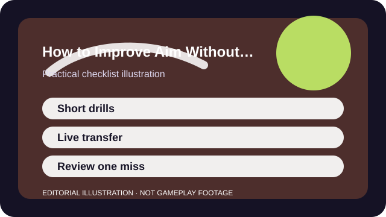

QUICK ANSWER
The short version
Train one aiming problem at a time, cap the drill length, and prove the change in real matches instead of living in warm-up tools forever.
Aim improvement is partly mechanical and partly informational. Players often blame accuracy when the earlier problem was crosshair placement, bad peeking, or choosing the wrong target under pressure.
That is why a shorter routine often works better than a marathon. A focused ten-minute block with one clear question teaches more than an hour of autopilot repetitions that never transfer into live play.

CHECKLIST
What to confirm before you change anything
- Choose one aim problem for the week: tracking, flick timing, target switching, or crosshair placement.
- Set a time limit for drills before you start so fatigue does not become the default training plan.
- Use the same drill or match scenario long enough to spot a real pattern.
- Write down one recurring type of miss rather than chasing raw score alone.
- Decide how you will test transfer in live games before the practice block ends.
This checklist keeps aim work tied to an actual gameplay need. If the routine cannot answer a live problem, it becomes entertainment instead of training.
SCENARIO
When your drills look better than your real matches
Many players can produce decent aim-trainer numbers and still lose ordinary fights because the live failure is not flick speed. It is entering fights with the crosshair too low, peeking without information, or shooting the wrong threat first.
A useful routine therefore begins with one missed moment from a real game and asks what smaller skill would have changed it. Sometimes the answer is tracking. Just as often it is patience, target priority, or where your camera was before the duel started.
PROCESS
A repeatable way to work through it
Name the exact miss
A miss like 'I lose targets when they strafe close' is actionable. 'My aim is bad' is not.
Use the shortest drill that matches the miss
If the problem is crosshair placement, a pathing or angle drill may matter more than a pure flick routine.
Transfer the same question into live games
Play a few ordinary matches while only watching for the chosen aiming issue. Ignore the urge to solve every problem simultaneously.
Review one clip or memory while it is fresh
A two-minute review after the match is enough to tell whether the drill changed the live decision or only the isolated exercise.
Aim improves faster when your routine is boringly sustainable. A short daily habit you keep beats an intense routine you abandon after three nights.
COMMON MISTAKES
What usually makes the problem worse
Training only raw flick speed
Many shooters reward preparation, positioning, and target order as much as the final snap.
Ignoring movement and peeking habits
Your aim often looks worse when your body enters the fight from a bad place or at the wrong timing.
Practicing deep into fatigue
Once your attention collapses, extra repetitions mostly teach tension and sloppiness.
SUCCESS CRITERIA
How to know the change actually worked
- Your crosshair starts closer to the next target before the fight fully begins.
- You panic less when more than one target appears.
- You can explain what part of the duel improved instead of only citing a score.
- The routine feels small enough to keep alongside ordinary play.
Useful aim work changes how fights feel, not just how a drill score looks. The clearest sign is when your live decisions become calmer before your highlight clips become flashier.
SOURCES AND LIMITS
Where to verify live details
- Some games reward positioning and utility usage more than raw aiming output.
- Controller aim-assist behavior changes the best drill shape and evaluation criteria.
- Visual strain or physical discomfort should be addressed before adding more repetition.
Menu names, defaults, and device behavior can change after updates. Use the linked official support surfaces for the current live details and keep this guide for the process around them.